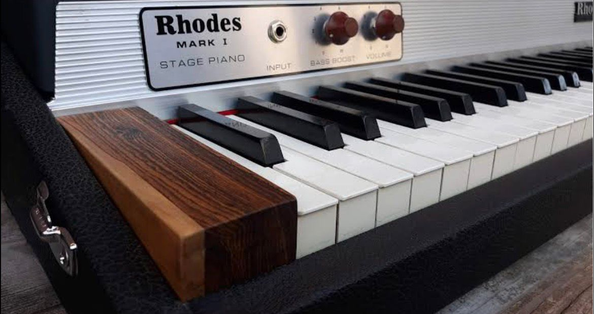
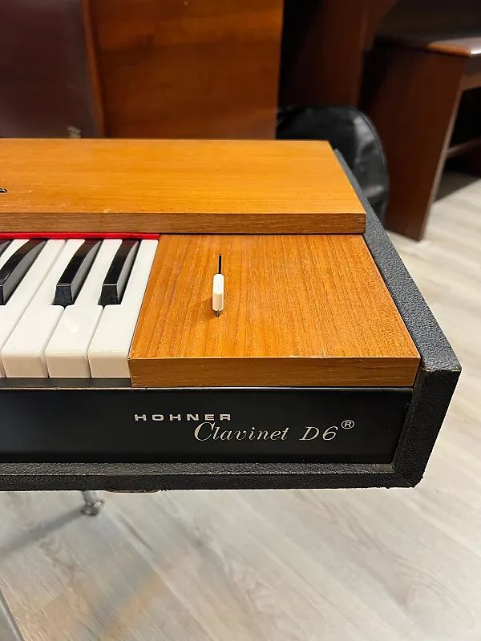

|

|
The Rhodes piano is an electro-mechanical piano, invented by Harold Rhodes during
the fifties and later manufactured in a number of models. First in collaboration with Fender and
after 1965 by CBS. It employs a piano-like keyboard with hammers that hit small metal tines,
amplified by electromagnetic pickups.
|
$1400 |
|
|
The Wurlitzer electric piano is an electro-mechanical piano, created by the Rudolph
Wurlitzer Company of Mississippi. The Wurlitzer company itself never called the instrument an
"electric piano", instead inventing the phrase "Electronic Piano" and using this as a trademark
throughout its production.
|
$1600 |
|

|
A Clavinet is an electronically amplified clavichord manufactured by the Hohner
company. Each key uses a rubber tip to perform a hammer action on a string. Various models were
produced, including the models I, II, L, C, D6, and E7.
|
$1200 |